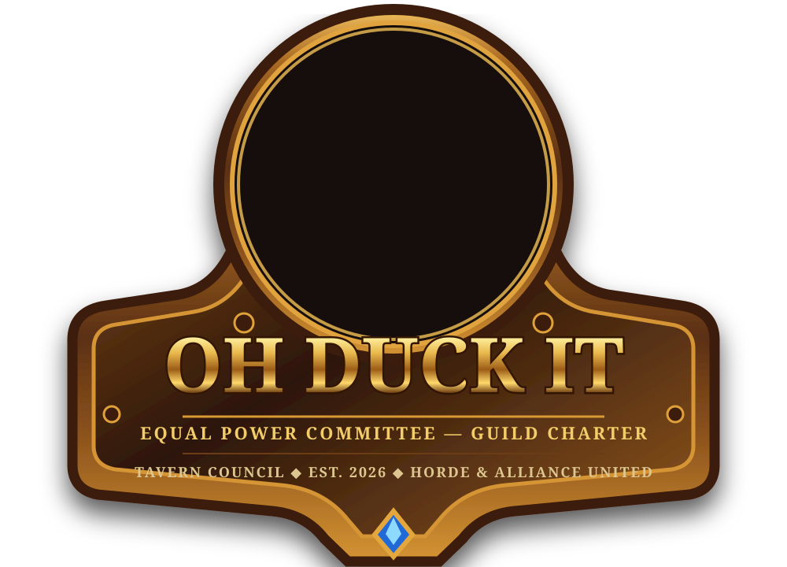

🏆
AoTC Every Season
Two dedicated progression nights with a clear seasonal objective. Mythic can follow once AoTC is secured if roster strength and interest support it.
Primary raid goal
AoTC-focused. Social. Progression-minded.
Reliable, coachable players working towards Ahead of the Curve every season without turning raid night into a second job.
ODit is built around a simple idea: turn up prepared, help the team, learn from mistakes, and enjoy the people you raid with.
Two dedicated progression nights with a clear seasonal objective. Mythic can follow once AoTC is secured if roster strength and interest support it.
Primary raid goalRegular Mythic+ groups, score progression, learning and a predictable weekly night for getting guild keys moving.
M+ progressionOptional reclears, fun runs and social activity matter too. Community members are part of the guild, not a waiting room for raid spots.
Social by designBe kind, inclusive and supportive — in game and out.
Show up, be prepared and give your best effort.
Keep it positive. We raid hard, but we also have fun.
WoW matters, but real life always comes first.